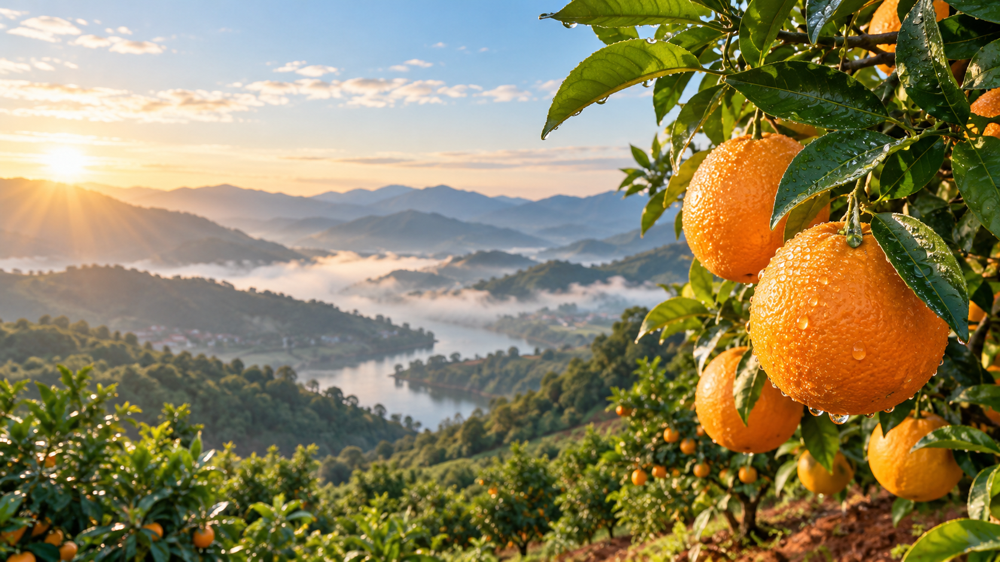

FROM THE HILLS OF GAN NAN
从一捧红土，
到一口清甜。
在赣南山地和客家乡土记忆里，橙树迎着山风与日照慢慢生长。我们把这一段来路，讲给你听。
- 01
赣南山地 · 迎着晨光生长
群山环抱，山风与日照陪着果树慢慢生长。
- 02
一捧红土 · 一季细心照料
果农巡园、养树、护果，把季节过得认真。
- 03
枝头采摘 · 鲜果细心分选
成熟时节再采下，按当批品质分拣装箱。
- 04
冷链启程 · 甜味一路同行
从产地启程，尽可能把新鲜送到家门口。

赣南 · 果园清晨从这里出发